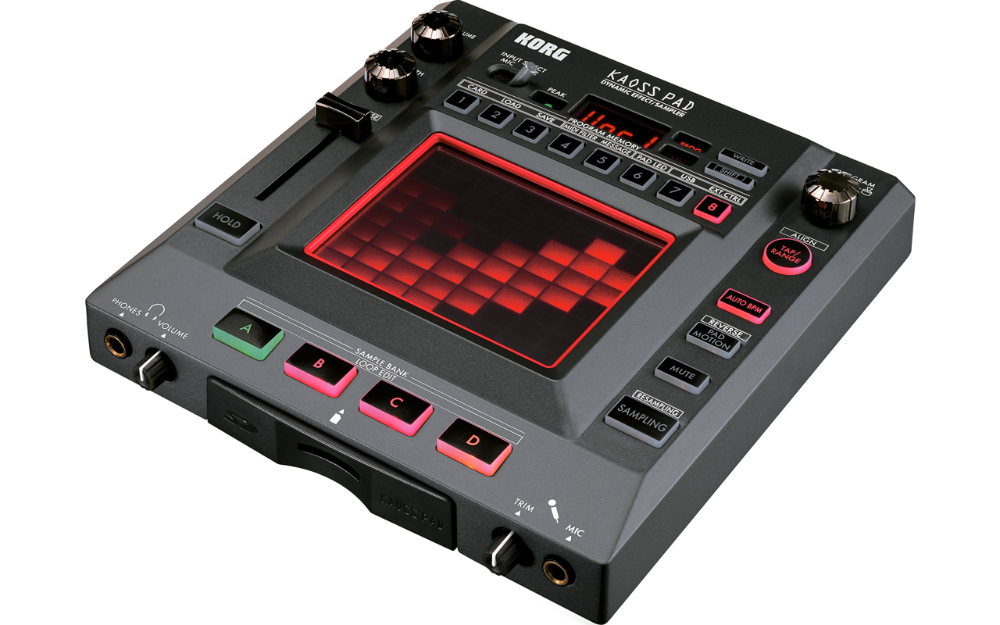
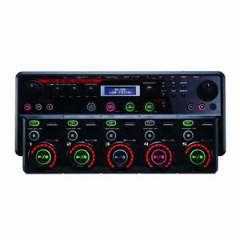

Introuduce
歡迎進入Beat box的基本介紹
以下將讓您快速建立對Human BeatBox的基本認識
基本介紹
★Origin★
Beatbox，起源於美國，是一種出現於1980年代的新興Hip Hop元素(音樂文化)，全稱Human Beatbox，該詞由Doug.E.Fresh首創,後來消淡了一段時間，至1990年代末因為饒舌文化而復興。
節奏口技是一種人聲敲擊樂（Vocal percussion）的藝術，利用嘴巴去模仿出有節奏、韻律的敲擊樂效果。樂手在即興表演時若無樂器在旁，節奏口技就大派用場。Now節奏口技慢慢演變成一種獨立音樂藝術及文化，還不時有比賽舉行。
★Beatbox論壇 everywhere★
★Classify★
分為A Cappella(阿卡貝拉)與Beatbox兩類
A Cappella
注重和聲
較為柔和
可以細分為低音、中音、高音、主唱、節奏等。
Beatbox
注重於節奏
表演多元化
可與各種樂器結合，也可與Loop station(Rc-50、Rc-20XL)、效果器(KP3)搭配做演出。
★Equipment★
只要有一張健全的嘴就能變換出千變萬化的聲音與節奏組合
若要做表演時常用各種樂器伴奏，或是使用如：KP3 或 Loop station
★How to battle!★
A.一般與饒舌battle的方式一樣：
B：另一種「Show case battle」是一人5分鐘，比較要求音樂性
Show~~
This is Bready Man!! You can see how interesting a beat box show can be!(watch from 0:22~3:54 & 13:25~17:32)
Battle~~
1.This is 2012 World beatbox battle!! BMG vs Vahtang - Best16 - 3rd Beatbox Battle World Championship (winner is BMG!)
That was a real battle!! 主持人都這麼說，好的比賽不是只有比拚，也要有些娛樂氣氛能帶動觀眾(看4:00)!